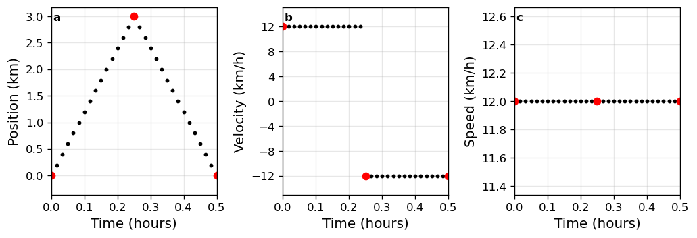
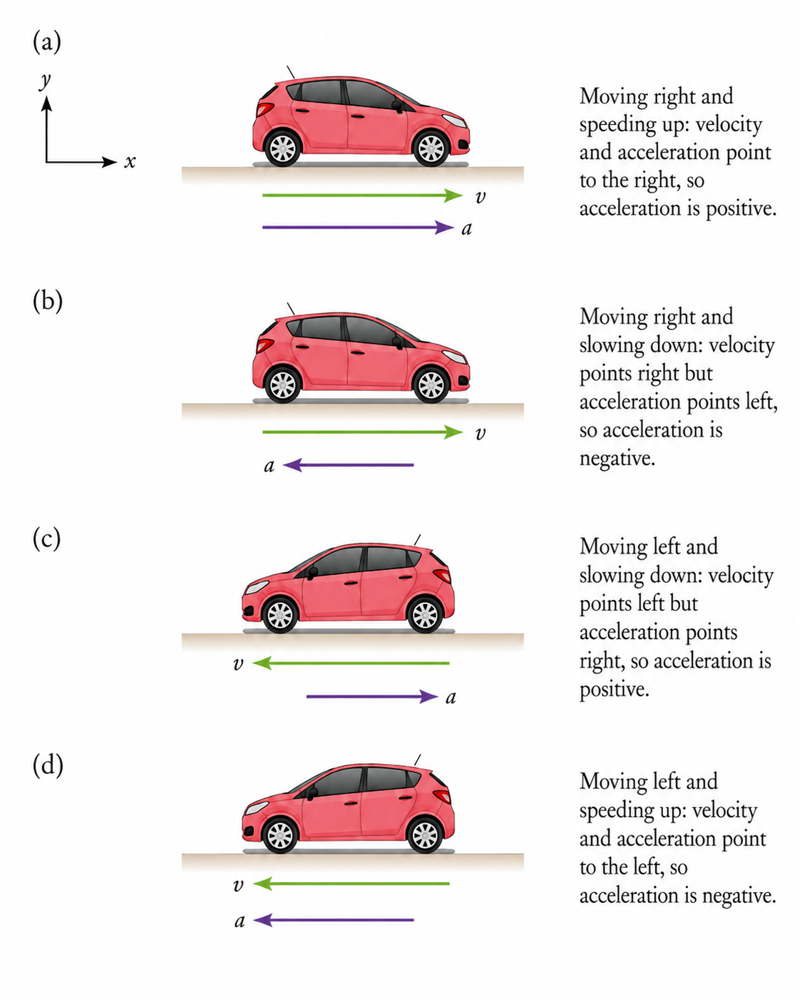
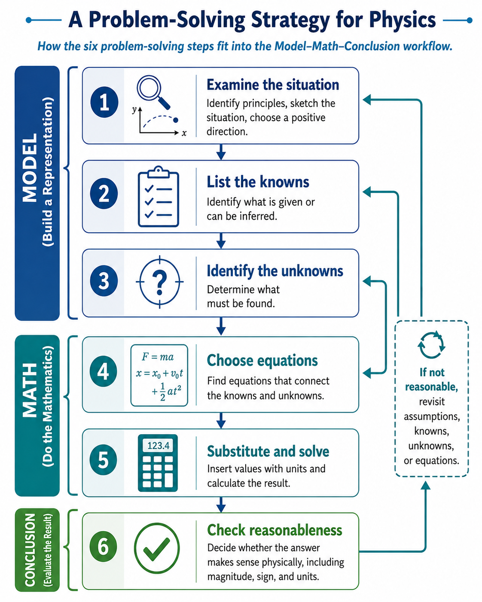
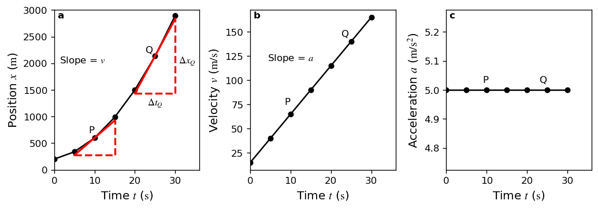
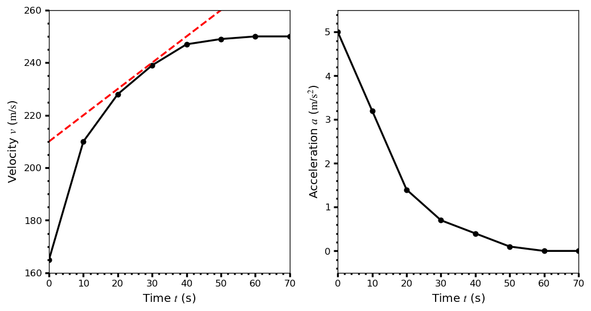

1. Kinematics#
Aug 30, 2026 | 9919 words | 66 min read
Chapter roadmap
Kinematics gives us a precise language for describing motion without yet asking what causes that motion. In this chapter, you will connect position, displacement, velocity, and acceleration to one another using words, equations, and graphs.
As you read, focus on three questions:
How do position, displacement, distance, velocity, and speed describe different aspects of the same motion?
How do the signs and directions of velocity and acceleration tell you whether an object is speeding up, slowing down, or changing direction?
How do you choose an appropriate constant-acceleration equation and decide whether the resulting answer is physically reasonable?
These tools will provide the foundation for later chapters on forces and two-dimensional motion.
Our formal study of physics begins with kinematics, which is defined as the study of motion without considering its causes. The word “kinematics” comes from a Greek term for motion. In one-dimensional (1D) kinematics and two-dimensional (2D) kinematics, we examine the motion along a straight line, which we can generalize to the motion along a curve in 2D.
1.1. Displacement#
1.1.1. Position#
To describe the motion of an object, you must first describe its position, or where the object is at any given time. The position is measured relative to a convenient frame of reference, where we often relate the position relative to something that usually appears static.
For example,
a rocket launch can be described relative to the rocket’s position from the ground,
a professor’s position can be described relative to how far he/she is standing from the markerboard.
In other cases, the reference frame is moving relative to our normal static frame of reference (i.e., the Earth). The position of a person walking on an airplane can be related to a point within the cabin, which is itself moving through the air. Note: The first step in solving some problems begins with defining the frame of reference.
1.1.2. Displacement#
If an object moves relative to a reference frame then the object’s position changes. The change in (represented by \(\Delta\)) position is known as displacement. The word “displacement” implies that an object has moved, where the sign of the displacement can mean it moved left/right, up/down, or forward/backward relative to the reference.
Displacement
Displacement is the change in position of an object, or
where \(\Delta x\) represents the displacement, \(x_f\) is the final position, and \(x_0\) designates the starting (initial) position.
Warning
The SI unit for displacement is the meter (\(\rm m\)), but sometimes kilometers (\(\rm km\)), miles (\(\rm mi\)), feet (\(\rm ft\)), and other units of length are used. Keep in mind that you can only combine two quantities only when they have the same units. Otherwise, you may need to convert to a common unit to complete the calculation.
Displacement has a direction as well as magnitude.
The common convention for displacement (in 1D) is that positive motion is to the right, while negative motion is to the left. If a professor moves \(2\ {\rm m}\), the displacement is positive. Suppose she turns around and moves \(6\ {\rm m}\) to the left. What is her new position?
We can measure her initial displacement using
Then her next displacement uses her new position (at \(x= 2\ {\rm m}\)) as her new starting position. Thus, here secondary displacement is given by
We can now determine her final position as
or the professor is now 4 meters to the left of where she started (i.e., the original frame of reference).
1.1.3. Distance#
Displacement has a magnitude and a direction, whereas distance has only a magnitude. Distance is defined as the magnitude (or size) of displacement between two positions. The distance between two positions is not the same as the distance traveled between them.
The distance traveled is the sum of the distances for each interval. Suppose that I walk \(3\ {\rm m}\) to the right and then I turn around and walk \(3\ {\rm m}\) to the left. Then you can divide the motion into two intervals: (1) \(3\ {\rm m}\) to the right and (2) \(3\ {\rm m}\) to the left. The distance in each interval is the same (\(3\ {\rm m}\)), but the distance traveled is \(6\ {\rm m}\). Mathematically, this is given by
where \(x_1\) and \(x_2\) are the individual distances (magnitudes) and \(d\) represents the distance traveled.
The distance traveled can be a different magnitude than the displacement. Return to the previous example and determine my displacement. It is more intuitive to start with the math, which is
The total displacement \(\Delta x\) is equal to zero!
The displacement includes the direction of motion, which in the above case cancels resulting in zero. The displacement is the difference in position of the starting and final position, which is independent of the path taken. We could have realized that my initial position was equal to my final position, so that \(x_f - x_0 = 0\).
In kinematics, we mostly deal with displacement and magnitude of displacement rather than with distance traveled.
Check Your Understanding
The Problem
A cyclist rides \(3\ {\rm km}\) west and then turns around and rides \(2\ {\rm km}\) east. (a) What is their displacement? (b) What distance do they ride? (c) What is the magnitude of their displacement?
Show worked solution
The Model
We define the \(x\)-axis along the cyclist’s path, with the origin at the starting point and \(+x\) pointing east. Westward displacements are therefore negative and eastward displacements are positive. The first displacement is therefore westward and negative, while the second displacement is eastward and positive.
The Math
The net displacement is the sum of the two signed displacements:
The distance traveled is the sum of the two path lengths without regard to direction:
The magnitude of the displacement is the absolute value of the signed displacement:
The Conclusion
The cyclist finishes \(1\ {\rm km}\) west of the starting point, so the displacement is \(-1\ {\rm km}\) in our coordinate system. The cyclist travels a total distance of \(5\ {\rm km}\), while the magnitude of the displacement is only \(1\ {\rm km}\).
1.2. Vectors, Scalars, and Coordinate Systems#
Distance has only a magnitude, which means that it is always positive or zero. You travel zero distance by standing still or a positive distance by moving from one place to another. The sum of two distances (\(d_1\) and \(d_2\)) is always positive or zero as well.
A scalar quantity has only a magnitude. Why is it called a scalar? The magnitude scales the quantity from the standard unit measurement. If something is \(100\ {\rm m}\) away, the unit measurement is \(1\ {\rm m}\) while the distance measurement scales (i.e., multiplies) the unit measurement by the magnitude, which is \(100\) in this case. There are special cases where a scalar can be negative. For example, a temperature of \(-20\ ^\circ{\rm C}\) describes a magnitude relative to a zero point. This is not to be confused with a direction.
Displacement has two properties: magnitude and direction. The direction allows for the displacement to be negative. Quantities that have a magnitude and direction are called vectors. The direction of a vector is represented using:
a positive (\(+\)) or negative (\(-\)) sign,
a cardinal direction (N/S or E/W), or
an angular rotation (degrees North of East).
Vectors are represented graphically by an arrow, where the length of the arrow is the magnitude. The longer the arrow, the greater the magnitude and vice versa.
1.2.1. Coordinate Systems for 1D Motion#
To describe a vector quantity, you must designate a coordinate system within the reference frame. For 1D motion, the coordinate system is a coordinate (or number) line where there is a zero point with positive values in one direction and negative values in the opposite direction. By convention, we often orient the coordinate line so that positive points to the right.
Note
In your problem solutions, defining the coordinate system is usually the first step in describing your model. This helps you build a mental model of the physics and also helps you build some intuition about what the final answer should be.
However, not all motion is along the horizontal where the coordinate line can also be oriented vertically. By convention, up is associated with positive and down with negative.
Warning
Even though most instances have positive/negative oriented along a particular direction, sometimes it’s easier to solve or interpret a problem if the directions are switched. For example, problems with gravity can have down representing the positive direction while up is negative. This is a matter of convenience so that you don’t have to worry about carrying a negative sign through a calculation.
But you must be consistent. Once you define your coordinate system, you must stick with it throughout the calculation.
Check Your Understanding
The Problem
A runner’s speed can stay the same as they round a corner while the direction of motion changes. Given this information, is speed a scalar or a vector quantity? Explain.
Show worked solution
The Conclusion
Speed is a scalar quantity because it specifies only the magnitude of the motion. The runner’s velocity is a vector and changes as the runner rounds the corner because its direction changes, even when the speed remains constant.
1.3. Time, Velocity, and Speed#
Kinematics is the study of motion, where objects in motion are changing in time. Thus far, we have only described stationary objects or the state of a system (i.e., position at a given time). Now we introduce the definitions of time, velocity, and speed to further our description of motion.
1.3.1. Time#
We measure time using the regular change in some physical quantity. On a digital clock, it is the changing number while for a grandfather clock, it would be the swings of a pendulum. In the past, we might have used the Sun’s position in the sky to measure time. Today we use the vibrations of a Cesium-133 atom to define a second.
The amount of time or change is calibrated by comparison with a standard. Grandfather clocks would track the time by counting the swings of a pendulum using a gear system. Whereas, \(9{,}192{,}631{,}770\) vibrations of a Cesium-133 atom is equivalent to one second.
We are usually interested in the elapsed time \(\Delta t\), or amount of time that has passed between the ending time \(t_f\) and the starting time \(t_0\):
Sometimes it is simpler if the initial time \(t_0 =0\) (i.e., when you start the stopwatch). Then we can drop the initial time \(t_0\), then \(\Delta t = t_f \equiv t\).
For simplicity, we usually assume:
motion begins at a time equal to zero (\(t_0 = 0\)), and
the symbol \(t\) is used for elapsed time unless otherwise specified (\(\Delta t = t_f \equiv t\)).
1.3.2. Velocity#
The velocity measures the displacement \(\Delta x\) over a given time interval \(\Delta t\). If you have a large displacement in a small amount of time, then you have a large velocity. Velocity has units of distance divided by time (e.g., miles per hour \(\rm mph\), or kilometers per hour \(\rm kph\)).
Average Velocity
Average velocity \(\bar{v}\) is the displacement (change in position) divided by the time of travel,
where the bar over the \(v\) indicates average. If the starting time \(t_0 = 0\), then the average velocity is simply
Notice that velocity is a vector because displacement is a vector. The SI unit for velocity is meters per second or \(\rm m/s\), but other units are also in common use (e.g., \(\rm mph\), \(\rm cm/s\), etc.).
Consider an airplane passenger that is moved \(4\ {\rm m}\) towards the back of the plane in \(5\ {\rm s}\). Assuming that a positive displacement is along the plane’s motion (i.e., towards the front), then the passenger’s displacement is \(\Delta x = -4\ {\rm m}\). His average velocity would be
The minus (\(-\)) sign indicates the average velocity vector also points towards the rear of the plane.
An object’s average velocity does not tell us anything about what happens to it while the object is in motion. For example, we cannot tell from average velocity whether the airplane passenger stops momentarily or backs up before he goes to the back of the plane. To get more details, we must consider smaller segments of the trip over small time intervals.
The smaller the time intervals, the more detailed the information. If we shrink the time interval to the extreme, it becomes infinitesimally small. Over such an interval, the average velocity becomes the instantaneous velocity.
A car’s speedometer shows the magnitude (but not the direction) of the car’s instantaneous velocity. Instantaneous velocity \(v\) is the average velocity at a specific instant in time, or over an extremely small time interval.
1.3.3. Speed#
In everyday language, most people use the terms “speed” and “velocity” interchangeably. But in physics, they do not have the same meaning and are distinct concepts. One major difference is that speed is a scalar meaning that it has no direction.
Instantaneous speed is the magnitude of the instantaneous velocity. Suppose an airplane passenger had an instantaneous velocity of \(-3\ {\rm m/s}\) at a time \(t\). At the same time, the passenger’s instantaneous speed is \(3\ {\rm m/s}\). The instantaneous speed has the same magnitude, but without the direction.
Average speed is very different from the average velocity, where average speed is the distance traveled divided by the elapsed time. For example, you can travel at constant speed towards an object, turn around quickly, and move at constant speed back to your starting position. Overall you have an average velocity equal to zero, but an average speed that is very different.
Another way of visualizing the motion of an object is to use a graph. Consider a graph showing the position (or velocity) as a function of time. Maybe more pragmatically, you’re on a trip where you record both your position and velocity at even time intervals (e.g., once per minute). You have a table of values that you can now plot.

Fig. 1.1 Graphs of your (a) position, (b) velocity, and (c) speed are measured once per minute. Note that the velocity for the return trip is negative.#
Show code cell content
import numpy as np
import matplotlib.pyplot as plt
from myst_nb import glue
# Set the font family globally
plt.rcParams['mathtext.fontset'] = 'stix'
plt.rcParams['mathtext.default'] = 'it'
def dist_travel(t):
d_1 = speed*t[t<=mid_time]
d_2 = -speed*t[t>mid_time]+2*d_1[-1]
dist = np.concatenate((d_1,d_2))
return dist
fs = 'large'
ms = 12
step = 1/60.
tmax = 0.5
time = np.arange(0,tmax+step,step)
speed = 12
mid_time = time[-1]/2
mid_idx = np.min(np.where(abs(time-mid_time)<step/2)[0])
pos = dist_travel(time)
vel = np.ones(len(pos))
vel[:mid_idx] *= speed
vel[mid_idx:] *= -speed
fig = plt.figure(figsize=(10,3),dpi=120)
ax1 = fig.add_subplot(131)
ax2 = fig.add_subplot(132)
ax3 = fig.add_subplot(133)
ax1.plot(time,pos,'k.',ms=5)
for idx in [0,mid_idx,-2]:
ax1.plot(time[idx],pos[idx],'r.',ms=ms)
ax1.set_xlabel("Time (hours)",fontsize=fs)
ax1.set_ylabel("Position (km)",fontsize=fs)
ax1.set_xlim(0,0.5)
ax1.set_xticks(np.arange(0,0.6,0.1))
ax1.grid(True,alpha=0.3)
ax1.text(0.01,0.93,'a',ha='left',fontweight='bold',transform=ax1.transAxes)
ax2.plot(time[:mid_idx],vel[:mid_idx],'k.',ms=5)
ax2.plot(time[mid_idx:],vel[mid_idx:],'k.',ms=5)
for idx in [0,mid_idx,-2]:
ax2.plot(time[idx],vel[idx],'r.',ms=ms)
ax2.set_xlabel("Time (hours)",fontsize=fs)
ax2.set_ylabel("Velocity (km/h)",fontsize=fs)
ax2.set_xlim(0,0.5)
ax2.set_ylim(-15,15)
ax2.set_yticks(np.arange(-12,16,4))
ax2.set_xticks(np.arange(0,0.6,0.1))
ax2.grid(True,alpha=0.3)
ax2.text(0.01,0.93,'b',ha='left',fontweight='bold',transform=ax2.transAxes)
ax3.plot(time[:mid_idx+1],np.abs(vel[:mid_idx+1]),'k.',ms=5)
ax3.plot(time[mid_idx:],np.abs(vel[mid_idx:]),'k.',ms=5)
for idx in [0,mid_idx,-2]:
ax3.plot(time[idx],abs(vel[idx]),'r.',ms=ms)
ax3.set_xlabel("Time (hours)",fontsize=fs)
ax3.set_ylabel("Speed (km/h)",fontsize=fs)
ax3.set_xlim(0,0.5)
ax3.set_xticks(np.arange(0,0.6,0.1))
ax3.grid(True,alpha=0.3)
ax3.text(0.01,0.93,'c',ha='left',fontweight='bold',transform=ax3.transAxes)
fig.subplots_adjust(wspace=0.4)
# Glue relative path for MyST
glue("position_graph", fig, display=False)
plt.close(fig)
Check Your Understanding
The Problem
A commuter train travels from Baltimore, MD, to Washington, DC, and back in \(1\ {\rm h}\ 45\ {\rm min}\). The distance between the two stations is approximately \(40\ {\rm mi}\). What is (a) the average velocity of the train and (b) the average speed of the train in \({\rm m/s}\)?
Show worked solution
The Model
We define the \(x\)-axis along the rail line, with the origin at Baltimore and \(+x\) pointing from Baltimore toward Washington. Because the train returns to Baltimore, its final position equals its initial position. The total path length is \(80\ {\rm mi}\) even though the net displacement is zero.
The Math
(a) The average velocity is the displacement divided by the elapsed time. Because the train returns to its starting point,
so
(b) The average speed is the total distance traveled divided by the elapsed time. The elapsed time is \(1.75\ {\rm h}\), so
The same speed in SI units is
The Conclusion
The average velocity is zero because the round trip has zero net displacement. The average speed is about \(20\ {\rm m/s}\) because the train travels a nonzero total distance during the trip.
1.4. Acceleration#
In everyday conversation, to accelerate means to speed up. The accelerator in a car causes it to speed up. The greater the acceleration, the greater the change in velocity over a given time. Recall that our definition of velocity was the change in displacement divided by the time interval.
Average Acceleration
Average acceleration is the change in velocity over a given time interval, where this is also called the rate at which the velocity changes. This is defined mathematically as
where \(\bar{a}\) denotes the average acceleration, \(v\) is the velocity, and \(t\) is the time.
The units for acceleration follow from its definition and the inherited units for velocity. In SI units we have
This is read as either meters per second squared or meters per second per second.
Acceleration as a Vector
Acceleration is a vector in the same direction as the change in velocity \(\Delta v = v_f-v_0\). A change in velocity can be a change in magnitude or a change in direction. For example, if a car turns a corner at constant speed, it is still accelerating because the direction changes. The quicker you turn, the greater the acceleration.
Although acceleration is in the direction of the change in velocity, it is not always in the direction of motion. When an object slows down, its acceleration is opposite in direction to its motion. This is known as deceleration.
Deceleration always reduces speed. Negative acceleration is acceleration in the negative direction in the chosen coordinate system. Negative acceleration may or may not be deceleration and vice versa.

Fig. 1.2 Velocity and acceleration for one-dimensional motion. Adapted from OpenStax, College Physics 2e, Figure 2.14.#
1.4.1. Example Problem: Racehorse Acceleration#
Example Problem: Calculating Acceleration — A Racehorse Leaves the Gate
The Problem
A racehorse accelerates from rest to a velocity of \(15\ {\rm m/s}\) due west in \(1.8\ {\rm s}\). What is its average acceleration?
Fig. 1.3 Velocity and acceleration vectors for a racehorse accelerating west from rest. Source: OpenStax, College Physics 2e, Figure 2.16.#
Show worked solution
The Model
We define the \(x\)-axis along the horse’s line of motion, with \(+x\) pointing east. A westward velocity therefore has a negative \(x\)-component. The horse starts from rest, \(v_0=0\), and reaches \(v=-15\ {\rm m/s}\) after \(1.8\ {\rm s}\). The unknown is the average acceleration over this interval.
The Math
The average acceleration is the change in velocity divided by the elapsed time:
The numerical value is
The Conclusion
The horse has an average acceleration of about \(8.3\ {\rm m/s^2}\) toward the west. The negative sign comes from the coordinate system and indicates direction; it does not mean that the horse is slowing down.
Adapted from OpenStax, College Physics 2e, Example 2.1.
1.4.2. Instantaneous Acceleration#
Instantaneous acceleration \(a\) is the acceleration at a specific instant in time and is determined by considering an infinitesimally small time interval. We can estimate this value using an average acceleration that is representative of the motion.
When the acceleration varies only slightly (see Figure 2.17a; OpenStax), then we can use the average value \(\bar{a}\) as the instantaneous acceleration. In this case the average value \(\bar{a} = 1.8\ {\rm m/s^2}\).
If the acceleration changes drastically with time (see Figure 2.17b; Open Stax), then we need to use a representative acceleration over a given time interval. For example, we could have
The next six examples revisit the same subway-train motion so that displacement, distance, velocity, and acceleration can be compared using one coordinate system. We take motion to the right as positive and motion to the left as negative.
1.4.3. Example Problem: Subway Train Displacement#
Example Problem: Calculating Displacement — A Subway Train
The Problem
A subway train moves (a) from \(x_0=4.7\ {\rm km}\) to \(x=6.7\ {\rm km}\) and (b) from \(x_0=5.25\ {\rm km}\) to \(x=3.75\ {\rm km}\). What are the magnitude and sign of the displacement for each motion?
Fig. 1.4 Two one-dimensional subway-train motions shown on a horizontal coordinate axis. Source: OpenStax, College Physics 2e, Figure 2.18.#
Show worked solution
The Model
We define the \(x\)-axis along the track, with \(+x\) pointing to the right. In each case the displacement depends only on the initial and final positions. Motion in part (a) is to the right, while motion in part (b) is to the left.
The Math
The displacement is defined by the final position minus the initial position:
(a) The first train displacement is
(b) The second train displacement is
The Conclusion
The positive displacement in part (a) means the train moves to the right, while the negative displacement in part (b) means the train moves to the left. Their displacement magnitudes are \(2.0\ {\rm km}\) and \(1.50\ {\rm km}\), respectively.
Adapted from OpenStax, College Physics 2e, Example 2.2.
1.4.4. Example Problem: Subway Train Distance#
Example Problem: Comparing Distance Traveled with Displacement — A Subway Train
The Problem
For the two subway-train motions in the previous example, what distance is traveled in (a) the \(+2.0\ {\rm km}\) motion and (b) the \(-1.50\ {\rm km}\) motion?
Fig. 1.5 Two one-dimensional subway-train motions shown on a horizontal coordinate axis. Source: OpenStax, College Physics 2e, Figure 2.18.#
Show worked solution
The Model
Each train moves directly from its initial position to its final position without reversing direction. Therefore, the distance traveled for each motion equals the magnitude of its displacement.
The Math
(a) The first displacement is \(+2.0\ {\rm km}\), so the distance traveled is
(b) The second displacement is \(-1.50\ {\rm km}\), so the distance traveled is
The Conclusion
Distance is a scalar and therefore carries no sign indicating direction. In these two straight, one-way motions, the distance traveled equals the magnitude of the displacement.
Adapted from OpenStax, College Physics 2e, Example 2.3.
1.4.5. Example Problem: Subway Train Speeding Up#
Example Problem: Calculating Acceleration — A Subway Train Speeding Up
The Problem
A subway train accelerates from rest to \(30\ {\rm km/h}\) to the right during the first \(20\ {\rm s}\) of its motion. What is its average acceleration?
Fig. 1.6 A subway train speeding up from rest with velocity and acceleration directed to the right. Source: OpenStax, College Physics 2e, Figure 2.19.#
Show worked solution
The Model
We define the \(x\)-axis along the track, with \(+x\) pointing to the right. The train starts from rest, \(v_0=0\), and reaches a positive final velocity of \(30\ {\rm km/h}\) in \(20\ {\rm s}\). The units of the final velocity must be converted to \({\rm m/s}\) before combining it with seconds.
The Math
The final velocity in SI units is
The average acceleration follows from the velocity change:
The Conclusion
The acceleration is positive because the train is speeding up toward the right, the positive direction. The sign is consistent with the positive change in velocity.
Adapted from OpenStax, College Physics 2e, Example 2.4.
1.4.6. Example Problem: Subway Train Slowing Down#
Example Problem: Calculating Acceleration — A Subway Train Slowing Down
The Problem
A train moving to the right slows from \(30\ {\rm km/h}\) to rest in \(8\ {\rm s}\). What is its average acceleration while stopping?
Fig. 1.7 A subway train moving to the right while acceleration points to the left as it slows. Source: OpenStax, College Physics 2e, Figure 2.20.#
Show worked solution
The Model
We define the \(x\)-axis along the track, with \(+x\) pointing to the right. The initial velocity is positive, the final velocity is zero, and the train is slowing down. Therefore, we expect the acceleration to point left and have a negative sign.
The Math
The initial speed in SI units is \(8.33\ {\rm m/s}\). The average acceleration is therefore
The Conclusion
The negative acceleration points to the left and opposes the train’s positive velocity. Because the acceleration is opposite the velocity, the train is decelerating.
Adapted from OpenStax, College Physics 2e, Example 2.5.
1.4.7. Example Problem: Subway Train Average Velocity#
Example Problem: Calculating Average Velocity — The Subway Train
The Problem
A subway train moves \(1.5\ {\rm km}\) to the left in \(5\ {\rm min}\). What is its average velocity?
Fig. 1.8 A subway train moving left from 5.25 km to 3.75 km on a horizontal coordinate axis. Source: OpenStax, College Physics 2e, Figure 2.22.#
Show worked solution
The Model
We define the \(x\)-axis along the track, with \(+x\) pointing to the right, making the train’s displacement \(\Delta x=-1.5\ {\rm km}\). The elapsed time is \(5\ {\rm min}\). The average velocity must have the same sign as the displacement.
The Math
The average velocity is displacement divided by elapsed time:
Converting to more familiar units gives
The Conclusion
The average velocity is \(-18\ {\rm km/h}\), or about \(-5.0\ {\rm m/s}\). The negative sign indicates that the train moves to the left.
Adapted from OpenStax, College Physics 2e, Example 2.6.
1.4.8. Example Problem: Subway Train Deceleration#
Example Problem: Calculating Deceleration — The Subway Train
The Problem
A subway train moving to the left slows to a stop from a velocity of \(20\ {\rm km/h}\) in \(10\ {\rm s}\). What is its average acceleration?
Fig. 1.9 A subway train moving left while acceleration points right as the train slows to a stop. Source: OpenStax, College Physics 2e, Figure 2.23.#
Show worked solution
The Model
We define the \(x\)-axis along the track, with \(+x\) pointing to the right, so the train initially has \(v_0=-20\ {\rm km/h}\) and ends at \(v=0\). Since the train is slowing while moving left, the acceleration must point right and should be positive.
The Math
The initial velocity in SI units is \(v_0=-5.56\ {\rm m/s}\). The average acceleration follows from
The Conclusion
The positive acceleration points to the right while the train’s velocity points to the left. Because velocity and acceleration point in opposite directions, the train slows down even though its acceleration is positive.
Adapted from OpenStax, College Physics 2e, Example 2.7.
1.4.9. Sign and Direction#
Typically we choose the positive \((+)\) direction to the right while the negative \((-)\) direction is to the left. This is easy to justify for displacement and velocity. But it is a little less obvious for acceleration.
Most people interpret a negative acceleration as the slowing of an object, but this need not be the case. A positive acceleration can slow a negative velocity. The four possible combinations are summarized in Fig. 1.2.
Check Your Understanding
The Problem
An airplane lands on a runway traveling east. Describe its acceleration as the airplane slows down.
Show worked solution
The Conclusion
If east is the positive direction, the airplane has a negative acceleration because the acceleration points west while the velocity points east. The airplane is therefore decelerating: its acceleration is opposite its velocity.
1.5. Motion Equations for Constant Acceleration in 1D#
1.5.1. Notation: \(t\), \(x\), \(v\), \(a\)#
Explicit notation with subscripts is useful within specific contexts. However, we can simplify our notation to make it easier to write (or type) our solutions.
If we take the initial time to be zero, then the elapsed time \(\Delta t\) equals the final time \(t_f\), or \(\Delta t = t_f\).
Initial position \(x_0\) and velocity \(v_0\) carry the subscript \(0\) to denote that they correspond to when the initial time \(t_0=0\).
We put no subscripts on the final time, position, or velocity.
This simplifies the expression for the elapsed time, but it also simplifies the expression for the displacement \(\Delta x = x-x_0\) and the change in velocity \(\Delta v = v - v_0\). These conventions are arbitrary, but they are useful once everyone is on the same page. This is much like how we decide which side of the road to drive on.
Using the simplified notation, we have
where the subscript \(0\) denotes an initial value and the absence represents a final value.
For now, we make the assumption that acceleration is constant. This allows us to avoid calculus to determine the instantaneous acceleration. As a result, the average and instantaneous accelerations are equal, or
In cases where the acceleration changes drastically in time, we can consider the motion in separate parts, each of which has its own constant acceleration.
Solving for Displacement and Final Position from Average Velocity when Acceleration is Constant
We start with the definition of average velocity:
But, we can simplify this expression using our chosen notation for \(\Delta x\) and \(\Delta t\), or
Now, we can solve for \(x\) in terms of the average velocity \(\bar{v}\) and the final time \(t\) to get
In addition to our other definition for average velocity, we also have
which is true for a constant acceleration.
When the acceleration is constant, \(\bar{v}\) is just the simple average of the initial and final velocities. For example, if you steadily increase your velocity from \(30\ {\rm kph}\) to \(60\ {\rm kph}\), then your average velocity during the increase is \(45\ {\rm kph}\). We can check this explicitly by
Solving for Final Velocity
By manipulating the definition of acceleration, we can find a relationship that describes the final velocity from the initial velocity, final time, and constant acceleration. Starting from the definition of acceleration, we have
We can simplify this expression using our chosen notation for \(\Delta v\) and \(\Delta t\), or
which is valid for constant acceleration. Then we can solve for \(v\) to get
Equation (1.15) provides insight into the relationships between velocity, acceleration, and time. From it we can see
final velocity depends on the magnitude of the acceleration and how long it lasts.
if the acceleration is zero, then the velocity is constant, \(v=v_0\).
if \(a\) is negative (\(a<0\)), then the final velocity is less than the initial velocity (\(v<v_0\)).
Solving for Final Position when Velocity is Not Constant (\(a\neq 0\))
Given the equations above, we can combine them to determine the final position of an object experiencing constant acceleration. We start with Eqn. (1.15), where we want to make the left side look like arithmetic average (Eqn. (1.11)).
We can do this by adding \(v_0\) to each side of Eqn. (1.15) and dividing both sides by 2 to get:
Now we can replace the left side with \(\bar{v}\) to get
Recall that the position equation (Eqn. (1.10)) also has a \(\bar{v}\). We can now substitute our above relation for \(\bar{v}\) into Eqn. (1.10) to get
which describes the final position \(x\) given a constant acceleration \(a\), initial position \(x_0\), initial velocity \(v_0\), and the final time \(t\).
From the above expression for the final position \(x\), we see that
displacement depends on the square of the elapsed (when \(a \neq 0\)).
if the acceleration is zero (\(a=0\)), then the initial velocity equals average velocity (\(v_0 = \bar{v}\)) and the relation reduces to \(x = x_0 + v_0 t\).
Solving for Final Velocity when Velocity is Not Constant (\(a\neq 0\))
We can find another relationship by manipulating the equations again. If we solve Eqn. (1.15) for \(t\), we get
We want to get rid of \(t\) from Eqn. (1.10) through a substitution, but we also need Eqn. (1.11) to get rid of \(\bar{v}\). We find that
This looks like a mess. But we can clean it up using a relation from algebra:
Now, we can simplify and rearrange our above expression to get
which relates the final velocity to the constant acceleration, displacement (\(x-x_0\)), and initial velocity. Notice that this no longer depends on time at all!
An examination of our equation for \(v^2\) shows us some other general relationships among the physical quantities:
The final velocity depends on the magnitude of the acceleration and the distance over which it acts.
The displacement (\(x-x_0\)) is the stopping distance from Drivers Ed. which means that it takes more distance to stop at high speed. This is given as
\[ x-x_0 = \frac{v_0^2}{2a}, \]where \(a<0\) for a fixed deceleration and \(v=0\) when you’re stopped.
1.5.2. Putting Equations Together#
We identified the equations used to solve problems in kinematics. Problem-solving requires you to recall and apply appropriately these equations for a given situation. The box below provides an easy reference.
Summary of Kinematic Equations (Constant \(a\))
Check Your Understanding
The Problem
A rocket accelerates at a constant rate of \(20\ {\rm m/s^2}\) during launch. How long does it take the rocket to reach a velocity of \(400\ {\rm m/s}\) if it starts from rest?
Show worked solution
The Model
We define the vertical \(y\)-axis with \(+y\) upward. The rocket starts from rest, so \(v_0=0\), and it accelerates upward at a constant \(a=20\ {\rm m/s^2}\) until it reaches \(v=400\ {\rm m/s}\). The unknown is the elapsed time.
The Math
The constant-acceleration relation that connects velocity, acceleration, and time is
Solving this relationship for the elapsed time gives
The numerical value is therefore
The Conclusion
The rocket requires \(20\ {\rm s}\) to reach \(400\ {\rm m/s}\) under the constant-acceleration model. The result is valid only over an interval for which treating the acceleration as constant is a reasonable approximation.
1.5.3. Example Problem: Jogger Displacement#
Example Problem: Calculating Displacement — How Far Does the Jogger Run?
The Problem
A jogger runs along a straight road with an average velocity of \(4\ {\rm m/s}\) for \(2\ {\rm min}\). What is the jogger’s final position if the initial position is \(x_0=0\)?
Fig. 1.10 A jogger moving with constant positive velocity from an initial position to an unknown final position. Source: OpenStax, College Physics 2e, Figure 2.25.#
Show worked solution
The Model
We define the \(x\)-axis along the road, with \(+x\) pointing in the jogger’s direction of motion. The average velocity is constant over the interval, the initial position is zero, and the unknown is the final position after \(2\ {\rm min}\).
The Math
The position change is determined from average velocity:
The elapsed time must first be written in seconds, \(2\ {\rm min}=120\ {\rm s}\). The final position is then
The Conclusion
The jogger finishes \(480\ {\rm m}\) in the positive direction from the starting point. The positive position change is consistent with the positive average velocity.
Adapted from OpenStax, College Physics 2e, Example 2.8.
1.5.4. Example Problem: Airplane Landing#
Example Problem: Calculating Final Velocity — An Airplane Slowing Down after Landing
The Problem
An airplane lands with an initial velocity of \(70\ {\rm m/s}\) and then has a constant acceleration of \(-1.5\ {\rm m/s^2}\) for \(40\ {\rm s}\). What is its final velocity?
Fig. 1.11 An airplane moving in the positive x direction while a negative acceleration slows it after landing. Source: OpenStax, College Physics 2e, Figure 2.27.#
Show worked solution
The Model
We define the \(x\)-axis along the runway, with \(+x\) pointing in the airplane’s landing direction. The airplane begins with a positive velocity while its acceleration is negative, so the airplane should slow down. The unknown is the final velocity after \(40\ {\rm s}\).
The Math
The constant-acceleration velocity relation is
The final velocity is therefore
The Conclusion
The airplane slows from \(70\ {\rm m/s}\) to \(10\ {\rm m/s}\) but is still moving forward. A negative final velocity would instead indicate that it had stopped and begun moving backward.
Adapted from OpenStax, College Physics 2e, Example 2.9.
1.5.5. Example Problem: Dragster Displacement#
Example Problem: Calculating Displacement of an Accelerating Object — Dragsters
The Problem
A dragster accelerates from rest at an average rate of \(26\ {\rm m/s^2}\) for \(5.56\ {\rm s}\). How far does it travel during this time?
Fig. 1.12 A dragster starting from rest and accelerating in the positive x direction toward an unknown final position. Source: OpenStax, College Physics 2e, Figure 2.31.#
Show worked solution
The Model
We define the \(x\)-axis along the drag strip, with the origin at the starting line and \(+x\) pointing down the track in the dragster’s direction of motion. The dragster starts from rest, so \(x_0=0\) and \(v_0=0\). The given race time is retained at its stated precision because timing is measured accurately in racing.
The Math
The constant-acceleration position relation is
With \(x_0=0\) and \(v_0=0\), the displacement becomes
The Conclusion
The dragster travels about \(402\ {\rm m}\), which is very close to a quarter mile. That scale is reasonable for a drag-racing example and shows how rapidly displacement grows when acceleration is large.
Adapted from OpenStax, College Physics 2e, Example 2.10.
1.5.6. Example Problem: Dragster Final Velocity#
Example Problem: Calculating Final Velocity — Dragsters
The Problem
Using the dragster from the previous example, calculate its final velocity after traveling \(402\ {\rm m}\) with an acceleration of \(26\ {\rm m/s^2}\). Do not use the elapsed time.
Fig. 1.13 A dragster starting from rest and accelerating over a known displacement to an unknown final velocity. Source: OpenStax, College Physics 2e, Figure 2.32.#
Show worked solution
The Model
The dragster starts from rest and moves in the positive direction with constant acceleration. We know \(v_0=0\), \(a=26\ {\rm m/s^2}\), and \(x-x_0=402\ {\rm m}\). The equation that connects these quantities without time is the appropriate model.
The Math
The time-independent kinematic relation is
The final speed follows from the positive square root because the dragster moves in the positive direction:
The Conclusion
The dragster reaches about \(145\ {\rm m/s}\). The positive root is physically appropriate because the final velocity points in the same direction as the acceleration and displacement.
Adapted from OpenStax, College Physics 2e, Example 2.11.
1.5.7. Example Problem: Car Stopping Distance#
Example Problem: Calculating Displacement — How Far Does a Car Go When Coming to a Halt?
The Problem
A car moving at \(30\ {\rm m/s}\) can decelerate at \(7\ {\rm m/s^2}\) on dry concrete but only \(5\ {\rm m/s^2}\) on wet concrete. Find the braking distance (a) on dry concrete and (b) on wet concrete. (c) Find the total stopping distance in each case if the driver has a reaction time of \(0.5\ {\rm s}\) before braking begins.
Fig. 1.14 A car slowing from 30 m/s to rest with different decelerations on dry and wet pavement. Source: OpenStax, College Physics 2e, Figure 2.33.#
Show worked solution
The Model
We define the \(x\)-axis along the road, with \(+x\) pointing in the car’s initial direction of motion. The initial velocity is \(v_0=30\ {\rm m/s}\) and the final velocity while braking is \(v=0\). The braking accelerations are negative because they oppose the motion. During the reaction interval, we assume the velocity remains approximately constant.
The Math
The braking displacement follows from the time-independent kinematic relation. Setting \(v=0\) gives
(a) On dry concrete, \(a=-7\ {\rm m/s^2}\), so
(b) On wet concrete, \(a=-5\ {\rm m/s^2}\), giving
(c) During the \(0.5\ {\rm s}\) reaction time, the car travels
The total stopping distances are therefore about
The Conclusion
The car requires substantially more distance to stop on wet pavement than on dry pavement. The reaction interval also adds \(15\ {\rm m}\) before braking even begins, showing why both road conditions and driver reaction time matter.
Adapted from OpenStax, College Physics 2e, Example 2.12.
1.5.8. Example Problem: Freeway Merge#
Example Problem: Calculating Time — A Car Merges into Traffic
The Problem
A car enters a \(200\ {\rm m}\) freeway ramp with an initial velocity of \(10\ {\rm m/s}\) and accelerates at \(2\ {\rm m/s^2}\). How long does it take to travel the length of the ramp?
Fig. 1.15 A car accelerating along a 200 m freeway ramp from a known initial velocity. Source: OpenStax, College Physics 2e, Figure 2.35.#
Show worked solution
The Model
We define the \(x\)-axis along the ramp, with the origin at the beginning of the ramp and \(+x\) pointing in the direction of travel. The known quantities are \(x-x_0=200\ {\rm m}\), \(v_0=10\ {\rm m/s}\), and \(a=2\ {\rm m/s^2}\). The unknown is the elapsed time.
The Math
The position relation for constant acceleration is
The given values produce the quadratic equation
Writing the numerical equation in standard quadratic form gives
The quadratic formula gives
The Conclusion
The physically meaningful solution is \(\boxed{10\ {\rm s}}\). The negative root describes a mathematical solution before the chosen start time and does not represent the motion after the car enters the ramp.
Adapted from OpenStax, College Physics 2e, Example 2.13.
1.6. Problem-Solving Basics for 1D Kinematics#
Problem-solving skills are essential in a quantitative course in physics. You will learn to apply broad physical principles (usually represented by equations) to specific situations. This is more powerful than memorizing a list of facts. Analytical skills and problem-solving abilities can be applied to new situations where the list of facts falls short.
1.6.1. Problem-Solving Steps#
There is not a simple step-by-step method that applies to every problem. Many people have pooled their experience to produce a general procedure, but a certain amount of creativity and insight (developed by solving many problems) might be required. See Figure 1.16 for a visual overview.
Step 1
Examine the situation to identify which physics topics are involved.
It helps to draw a simple sketch at the outset. Many problems are too complicated to do “in your head”, where a drawing can help you externalize your thinking.
Your sketch will help determine coordinates and set up the problem.
Step 2
Make a list of the given information and what can be inferred. (Identify the knowns)
Your sketch can be useful for putting the knowns together.
Keywords like “stopped” or “from rest” means the velocity is zero.
Step 3
Identify what the problem is seeking. (Identify the unknowns)
Sometimes its not obvious what you are trying to find. Making a list can help.
Step 4
Find an equation (or set of equations) that can help solve the problem.
Your list of knowns and unknowns can help here.
It’s easiest if an equation has all your knowns and the unknown that you’re solving for.
Sometimes you have two equations and two unknowns. Those can be solved together, but the order matters.
Step 5
Substitute the knowns (with their units) in the appropriate equation.
Your solution should result in a number with units. Units are an important check on whether you solved the problem correctly.
If the units of the answer are incorrect, this is a red flag that you made a mistake. However, correct units don’t guarantee a correct answer.
Step 6
Check whether the answer is reasonable: Does it make sense?
Check both the magnitude and sign of the answer, in addition to the units.
Your judgement for reasonableness should improve as you solve lots of problems.
This step can point you to a prior step, where you need to revisit your assumptions.

Fig. 1.16 Flowchart for problem-solving based on the 6 steps outlined above. The steps are grouped into what will likely be the Model, Math, and Conclusion sections of your homework.#
Schaum’s Outlines can provide an inexpensive source of additional worked examples and practice problems. Use them to strengthen your problem-solving skills by attempting each problem before consulting the solution. You can also upload course notes or assigned material to a Gemini notebook (formerly NotebookLM) and ask it to generate targeted practice problems, quizzes, and explanations based on those sources.
1.6.2. Unreasonable results#
Physics must describe nature accurately. Some problems have results that are unreasonable because one premise (assumption) is unreasonable or certain premises are inconsistent with each other.
Consider a person starting a foot race accelerates at \(0.40\ {\rm m/s^2}\) for \(100\ {\rm s}\). You find that his final speed is \(40\ {\rm m/s}\). Is that reasonable?
Step 1 In the example you would identify the givens as the acceleration (\(a=0.40\ {\rm m/s^2}\)) and time (\(t=100\ {\rm s}\)). Then you would use the equation to find the unknown final velocity, or
Step 2 Check your answer to whether your result is too small, too large, or has the wrong sign. In this case you may need to convert the \(\rm m/s\) into a more familiar unit (e.g., \(\rm mph\)). We can do this by
This velocity is about \(4\times\) greater than any person can run. It is definitely too large.
Step 3 If the answer is unreasonable, look for what could cause the identified difficulty. Since the example only gives the acceleration and the final time, each one could be suspect.
If someone accelerates at \(0.40\ {\rm m/s^2}\), their velocity increases by \(0.4\ {\rm m/s}\) each second. Does this seem reasonable? A normal run can have an acceleration of \(1-2\ {\rm m/s^2}\), but it’s usually only for the first few seconds.
Could someone accelerate constantly for \(100\ {\rm s}\)? This is \(1\ {\rm min}\ 40\ {\rm s}\), where runners typically accelerate for only a few seconds to get to a top speed.
1.7. Falling Objects#
Using Falling objects we can estimate the depth of a vertical shaft by dropping a rock into it and listening for the rock to hit the bottom. By applying kinematics to falling objects, we can examine other interesting situations and learn about gravity in the process.
1.7.1. Gravity#
If air resistance and friction are negligible, then all objects fall toward the center of the Earth with the same constant acceleration independent of their mass. This is counterintuitive because we are accustomed to the effects of air resistance and friction. As a result, we expect light objects to fall slower than heavy ones.
In the real world, air resistance causes a lighter object to fall slower than a heavier object of the same size. A tennis ball will reach the ground after a hard baseball, but the drop height needs to be large to see the difference. Air resistance opposes the motion of an object through the air, while friction opposes relative motion between surfaces. An object falling without air resistance or friction is defined to be in free-fall.
Gravity causes objects to fall toward the center of the Earth, where the acceleration of free-falling objects is called the acceleration due to gravity. The acceleration due to gravity (near Earth’s surface) is constant, which means we can apply the kinematics equations to any object in free-fall. The acceleration due to gravity is given its own symbol \(g\), where it has the average value
for any location on Earth’s surface. The value of \(g\) varies from \(9.78-9.83\ {\rm m/s^2}\) depending on latitude, altitude, geological formations, and local topography. We use the average value because the variations in precision are often below that of significant figures in most calculations. Since gravity causes objects to fall toward the center of the Earth, we use this direction of force to define the vertical direction.
Note
Whether the acceleration \(a\) in the kinematic equations has the value \(+g\) or \(-g\) depends on how we define our coordinate system. If we define the upward direction as positive, then \(a=-g\).
1.7.2. 1D Motion Involving Gravity#
Let’s start by considering problems with straight up and down motion with no air resistance. These assumptions mean that the velocity is vertical.
If the object is dropped, we know the initial velocity is zero.
Once the object has left contact with whatever held or threw it, the object is in free-fall.
Under these circumstances, the motion is one-dimensional and has constant acceleration (of magnitude \(g\)).
Kinematic Equations for Objects in Free-fall \((a=-g)\)
Check Your Understanding
The Problem
A chunk of ice breaks off a glacier and falls \(30\ {\rm m}\) before it hits the water. Assuming it falls freely from rest, how long does it take to hit the water?
Show worked solution
The Model
We define the vertical \(y\)-axis with the origin at the release point and \(+y\) upward. The ice starts from rest, so \(v_0=0\), and the water is at \(y=-30\ {\rm m}\). With air resistance neglected, the acceleration is constant and downward, \(a=-g=-9.81\ {\rm m/s^2}\).
The Math
The vertical position of an object in free fall is described by
With \(y_0=0\) and \(v_0=0\), the elapsed time follows from
The numerical value is
The Conclusion
The ice takes about \(2.5\ {\rm s}\) to reach the water. The positive root is the physically meaningful solution because elapsed time after release must be positive.
Interactive Simulation: Graphing Quadratics
Use this PhET simulation to explore how changing the coefficients in the quadratic equation affects the graph.
1.7.3. Example Problem: Rock Thrown Upward#
Example Problem: Calculating Position and Velocity of a Falling Object — A Rock Thrown Upward
The Problem
A person standing at the edge of a high cliff throws a rock straight upward with an initial velocity of \(13\ {\rm m/s}\). Calculate the rock’s position and velocity \(1\ {\rm s}\), \(2\ {\rm s}\), and \(3\ {\rm s}\) after release. Neglect air resistance and take the release point as \(y_0=0\).
Fig. 1.17 A rock thrown upward with positive initial velocity while gravitational acceleration points downward. Source: OpenStax, College Physics 2e, Figure 2.38.#
Show worked solution
The Model
We define the vertical \(y\)-axis with \(+y\) upward. The rock begins with \(v_0=+13\ {\rm m/s}\) and remains in free fall after release, so its acceleration is constant and downward, \(a=-g=-9.81\ {\rm m/s^2}\). Position and velocity are requested at three times.
The Math
The vertical position is determined from
while the vertical velocity is determined from
Evaluating both relationships gives
\(t\) (\({\rm s}\)) |
\(y\) (\({\rm m}\)) |
\(v\) (\({\rm m/s}\)) |
|---|---|---|
\(1\) |
\(8.10\) |
\(+3.19\) |
\(2\) |
\(6.38\) |
\(-6.62\) |
\(3\) |
\(-5.14\) |
\(-16.4\) |
The Conclusion
At \(1\ {\rm s}\) the rock is above the release point and still moving upward. At \(2\ {\rm s}\) it remains above the release point but is moving downward, and by \(3\ {\rm s}\) it is below the release point and continuing downward. The acceleration remains \(-g\) throughout the entire flight, including at the highest point.
Adapted from OpenStax, College Physics 2e, Example 2.14.
1.7.4. Example Problem: Rock Thrown Downward#
Example Problem: Calculating Velocity of a Falling Object — A Rock Thrown Down
The Problem
A rock is thrown straight downward from a cliff with an initial speed of \(13\ {\rm m/s}\). What is its velocity when it is \(5.1\ {\rm m}\) below the starting point? Neglect air resistance.
Fig. 1.18 A rock thrown downward with both its initial velocity and gravitational acceleration directed downward. Source: OpenStax, College Physics 2e, Figure 2.40.#
Show worked solution
The Model
We define the vertical \(y\)-axis with \(+y\) upward. The initial velocity is therefore \(v_0=-13\ {\rm m/s}\), the displacement is \(y-y_0=-5.1\ {\rm m}\), and the acceleration is \(a=-g=-9.81\ {\rm m/s^2}\). We expect the final velocity to remain negative because the rock continues downward.
The Math
The time-independent kinematic equation is
The squared speed is
Taking the square root gives two mathematical roots, but the downward-moving rock requires the negative root:
The Conclusion
The rock is moving downward at about \(16.4\ {\rm m/s}\). The negative sign is required by the coordinate system and is consistent with the expected direction of motion.
Adapted from OpenStax, College Physics 2e, Example 2.15.
1.7.5. Example Problem: Measuring \(g\)#
Example Problem: Find \(g\) from Data on a Falling Object
The Problem
A metal ball is released from rest and falls exactly \(1.0000\ {\rm m}\) in \(0.45173\ {\rm s}\). Assuming air resistance is negligible, determine the local acceleration due to gravity. The extra digits are retained because this is a precision measurement.
Fig. 1.19 A falling ball released from rest with unknown downward acceleration on a vertical coordinate system. Source: OpenStax, College Physics 2e, Figure 2.43.#
Show worked solution
The Model
We define the vertical \(y\)-axis with the origin at the release point and \(+y\) upward. The ball starts from rest, \(v_0=0\), and moves to \(y=-1.0000\ {\rm m}\) in \(0.45173\ {\rm s}\). The acceleration is downward, so the calculated value of \(a\) should be negative.
The Math
The vertical position relation is
With \(y_0=0\) and \(v_0=0\), solving for the acceleration gives
The measured values give
The Conclusion
The local gravitational acceleration is \(9.8010\ {\rm m/s^2}\) downward. Its magnitude is close to the standard value \(9.81\ {\rm m/s^2}\), and the negative sign correctly identifies the downward direction in the chosen coordinate system.
Adapted from OpenStax, College Physics 2e, Example 2.16.
1.8. Graphical Analysis of 1D Motion#
Graphs reveal relationships between physical quantities. This section uses graphs of position, velocity, and acceleration versus time to illustrate 1D kinematics.
1.8.1. Slopes and General Relationships#
Graphs have perpendicular axes, where the horizontal axis is usually considered the independent variable (i.e., knob you turn or input) and the vertical axis marks the dependent variable (i.e., result). We can call the horizontal axis the \(x\)-axis and the vertical axis the \(y\)-axis.
We use mathematical models to describe how the input (independent) variables affect the output (dependent) variable. One of the simplest models is a straight line and has the general form
where \(m\) is the slope that measures how much the line increases vertically (rise) divided by how much it increases horizontally (run). The y-intercept defines the vertical point where the line crosses the \(y\)-axis, or when \(x=0\).
1.8.2. Graph of Position vs. Time#
Time is usually an independent variable, where you watch the motion while controlling the stopwatch. A graph of position versus time has the position \(x\) on the vertical axis and the time \(t\) along the horizontal axis. Graphs are always described by the dependent vs. independent variable.
Using the relationship between dependent and independent variables, you can see an object’s average velocity \(\bar{v}\) plays the same role as the slope \(m\) in our mathematical model. Comparing the equation of a line (Eqn. (1.24)), we can see that the equations:
have the same form so that \(y\rightarrow x\), \(x\rightarrow t\), \(m\rightarrow \bar{v}\), and \(b\rightarrow x_0\).
A graph of position versus time describes a general relationship between the displacement (change in position), average velocity, and time.
1.8.3. Example Problem: Average Velocity from a Graph#
Example Problem: Determining Average Velocity from a Position-versus-Time Graph — Jet Car
The Problem
A straight-line position-versus-time graph for a jet car contains the points \((0.50\ {\rm s},525\ {\rm m})\) and \((6.40\ {\rm s},2000\ {\rm m})\). Use these graph-read values to determine the car’s average velocity.
Fig. 1.20 A straight-line position-versus-time graph for a jet-powered car. Source: OpenStax, College Physics 2e, Figure 2.45.#
Show worked solution
The Model
The position-versus-time graph is a straight line, so its slope is constant and equals the average velocity. The numerical precision of the two points is retained because the values are being read from the source graph.
The Math
The average velocity is the slope of the position-versus-time graph:
Using the two widely separated graph points reduces the fractional effect of reading uncertainty:
The Conclusion
The jet car’s average velocity is \(250\ {\rm m/s}\). Because the graph is linear, the slope is the same throughout this interval, so the instantaneous velocity is also constant at this value.
Adapted from OpenStax, College Physics 2e, Example 2.17.
1.8.4. Graphs of Motion when \(a\) is constant but \(a\neq 0\)#
The graphs in Figure 1.21 represent the motion of a jet-powered car as it accelerates toward its top speed, but only during the time when its acceleration is constant. The time \(t\) starts at zero for this motion (as measured with a stopwatch), while the initial position \(x_0\) and velocity \(v_0\) are \(200\ {\rm m}\) and \(15\ {\rm m/s}\), respectively.

Fig. 1.21 Graphs of the jet car’s (a) position, (b) velocity, and (c) acceleration are measured every 5 seconds versus time. The tangent lines at points \(P\) and \(Q\) in panel (a) have slopes equal to the instantaneous velocity at those points. The slope of the line in panel (b) represents the constant acceleration shown in panel (c).#
Show code cell content
import numpy as np
import matplotlib.pyplot as plt
from myst_nb import glue
def slope(t_idx):
m = v[t_idx]
t = time[t_idx-1:t_idx+2]
y0 = x[t_idx] - m*t[1]
y1 = y0 + m*t[0]
y2 = y0 + m*t[2]
return m*t + y0, y1, y2
a0 = 5 #acceleration in m/s^2
v0 = 15 #initial velocity in m/s
x0 = 200 #initial position in m
ms = 10
fs = 'large'
time = np.arange(0,35,5)
a = a0*np.ones(len(time))
v = v0 + a*time
x = x0 + v0*time + 0.5*a*time**2
state = [x,v,a]
fig = plt.figure(figsize=(10,3),dpi=120)
ax1 = fig.add_subplot(131)
ax2 = fig.add_subplot(132)
ax3 = fig.add_subplot(133)
ax_list = [ax1,ax2,ax3]
ax1.plot(time,x,'k.-', ms=ms)
ax1.set_ylabel("Position $x$ ($\\rm m$)",fontsize=fs)
ax1.text(7,2000,"Slope = $v$",ha='center')
y,y1,y2 = slope(2)
ax1.plot(time[1:4],y,'r-',lw=2)
ax1.plot(time[1:4],y1*np.ones(3),'r--',lw=2)
ax1.plot([time[3],time[3]],[y1,y2],'r--',lw=2)
y,y1,y2 = slope(5)
ax1.plot(time[4:],y,'r-',lw=2)
ax1.plot(time[4:],y1*np.ones(3),'r--',lw=2)
ax1.plot([time[-1],time[-1]],[y1,y2],'r--',lw=2)
ax1.text(25,1200,'$\\Delta t_Q$',ha='center')
ax1.text(33,2000,'$\\Delta x_Q$',ha='center')
ax1.set_ylim(0,3000)
ax2.plot(time,v,'k.-', ms=ms)
ax2.set_ylabel("Velocity $v$ ($\\rm m/s$)",fontsize=fs)
ax3.plot(time,a,'k.-', ms=ms)
ax3.set_ylabel("Acceleration $a$ ($\\rm m/s^2$)",fontsize=fs)
text_idx = [2,5]
sub_lbl = ['a','b','c']
for i in range(0,3):
ax_list[i].set_xlabel("Time $t$ ($\\rm s$)",fontsize=fs)
ax_list[i].set_xlim(0,36)
ax_list[i].text(0.02,0.95,sub_lbl[i],ha='left',weight='bold',transform=ax_list[i].transAxes)
ax1.text(8.5,700,'P',ha='left')
ax1.text(22.5,2200,'Q',ha='left')
ax2.text(8.5,75,'P',ha='left')
ax2.text(22.5,145,'Q',ha='left')
ax2.text(10,120,'Slope = $a$',ha='center')
ax3.text(9,5.025,'P',ha='left')
ax3.text(23,5.025,'Q',ha='left')
fig.subplots_adjust(wspace=0.35)
# Glue relative path for MyST
glue("pos_vel_accel_graph", fig, display=False)
plt.close(fig)
The graph of position versus time in Fig. 1.21a is a curve rather than a straight line because the jet car is accelerating. The slope of the curve steepens as time progresses, which demonstrates that the velocity increases with time. The slope at any point on an \(x\)-vs-\(t\) graph is the instantaneous velocity at that point, where it is found by drawing a straight line tangent to the curve at the point of interest and taking the slope of this straight line (i.e., \(v_Q = \Delta x_Q/\Delta t_Q\)).
Figure 1.21a demonstrates how to find the slope at points \(P\) and \(Q\). However, you can do the same procedure for any point on the line to get the corresponding velocity at that point. Such a procedure will result in a plot of the velocity versus time (see Fig. 1.21b). Repeating this procedure but finding the slope for each point on the \(v\)-vs-\(t\) graph shows the acceleration at each time, which is shown in Fig. 1.21c.
1.8.5. Example Problem: Instantaneous Velocity from a Graph#
Example Problem: Determining Instantaneous Velocity from the Slope at a Point — Jet Car
The Problem
Use the tangent line at point \(Q\) in the figure below to calculate the jet car’s instantaneous velocity at \(t=25\ {\rm s}\). The tangent line passes approximately through \((19\ {\rm s},1300\ {\rm m})\) and \((32\ {\rm s},3120\ {\rm m})\).
Fig. 1.22 A curved position-versus-time graph with tangent lines at points P and Q and a table of jet-car positions. Source: OpenStax, College Physics 2e, Figure 2.48.#
Show worked solution
The Model
The instantaneous velocity at a point on a position-versus-time graph is the slope of the tangent line at that point. The two stated points lie on the tangent line rather than on the motion curve itself and provide the rise and run needed to estimate the slope.
The Math
The instantaneous velocity is the tangent-line slope:
Using the two tangent-line points gives
The Conclusion
The jet car’s instantaneous velocity at \(25\ {\rm s}\) is about \(140\ {\rm m/s}\). The steeper tangent at \(Q\) than at earlier times is consistent with the car speeding up under positive acceleration.
Adapted from OpenStax, College Physics 2e, Example 2.18.
We found explicitly that the velocity is determined using rise (change in position) divided by the run (change in time) on an \(x\)-vs-\(t\) graph. Carrying this one step further, we find the slope of a \(v\)-vs-\(t\) graph is the acceleration. In this case the rise is the change in velocity \(\Delta v\) while the run is still the time interval \(\Delta t\).
The Slope of \(v\) vs. \(t\)
The slope of a graph of velocity \(v\) vs. time \(t\) is an acceleration \(a\):
For kinematics, the \(v\)-vs-\(t\) graph is a straight line (see Fig. 1.21b), where its slope is the same everywhere. This implies that the acceleration is constant. We can see this mathematically through the following substitutions
which is given explicitly by
It is not accidental that the same equations are obtained by graphical analysis as by algebraic techniques. An important way to discover physical relationships is by plotting your outputs (i.e., what you observe) versus your inputs (i.e., what you can measure well). Sometimes correlations imply physical relationships and are more easily understood using a graph.
1.8.6. Graphs of Motion Where Acceleration is Not Constant#
Consider the motion of the jet car as it goes from \(165\ {\rm m/s}\) to its top velocity of \(250\ {\rm m/s}\) as shown in Figure 1.23. The time starts from zero, where the acceleration gradually decreases from \(5.0\ {\rm m/s^2}\) to zero when the car reaches \(250\ {\rm m/s}\). The velocity increases for \(55\ {\rm s}\) and then becomes constant.

Fig. 1.23 Graphs of the jet car’s (a) velocity, and (b) acceleration as it reaches its top velocity. This motion begins where the motion in Fig. 1.21 ends.#
Show code cell content
import numpy as np
import matplotlib.pyplot as plt
from myst_nb import glue
# Set the font family globally
plt.rcParams['mathtext.fontset'] = 'stix'
plt.rcParams['mathtext.default'] = 'it'
fs = 'large'
ms = 10
time = np.arange(0,80,10)
v = [165,210,228,239,247,249,250,250]
a = [5,3.2,1.4,0.7,0.4,0.1,0,0]
fig = plt.figure(figsize=(10,5),dpi=120)
ax1 = fig.add_subplot(121)
ax2 = fig.add_subplot(122)
ax_list = [ax1,ax2]
ax1.plot(time,v,'k.-',ms=ms,lw=2)
#make slope of line using t = 25 -> a = 1.0 m/s^2
t2 = np.arange(0,55,5)
a_25 = 1. #in m/s^2
v2 = 210 + a_25*t2
ax1.plot(t2,v2,'r--',lw=2)
ax1.set_ylabel("Velocity $v$ ($\\rm m/s$)",fontsize=fs)
ax1.set_ylim(160,260)
ax2.plot(time,a,'k.-',ms=ms,lw=2)
ax2.set_ylabel("Acceleration $a$ ($\\rm m/s^2$)",fontsize=fs)
ax2.set_ylim(-0.5,5.5)
ax2.set_xlim(0,70)
for i in range(0,2):
ax_list[i].set_xlim(0,70)
ax_list[i].minorticks_on()
ax_list[i].tick_params(which='major',axis='both', direction='out',length = 4.0, width = 2.0)
ax_list[i].tick_params(which='minor',axis='both', direction='out',length = 2.0, width = 2.0)
ax_list[i].set_xlabel("Time $t$ (s)",fontsize=fs)
# Glue relative path for MyST
glue("vel_accel_graph", fig, display=False)
plt.close(fig)
1.8.7. Example Problem: Acceleration from a Graph#
Example Problem: Calculating Acceleration from a Velocity-versus-Time Graph
The Problem
Use the tangent line in the velocity-versus-time graph below to estimate the jet car’s acceleration at about \(t=25\ {\rm s}\). The tangent line rises from approximately \(210\ {\rm m/s}\) to \(260\ {\rm m/s}\) over a \(50\ {\rm s}\) interval.
Fig. 1.24 Jet-car velocity and acceleration graphs as the car approaches its top speed. Source: OpenStax, College Physics 2e, Figure 2.49.#
Show worked solution
The Model
Acceleration is the slope of a velocity-versus-time graph. Because the velocity curve is not linear, we use the slope of the tangent line at the time of interest rather than the slope over the entire motion.
The Math
The acceleration is the change in velocity along the tangent line divided by its time interval:
Using the tangent-line values gives
The Conclusion
The jet car’s instantaneous acceleration near \(25\ {\rm s}\) is about \(1.0\ {\rm m/s^2}\). This agrees with the acceleration curve, which has fallen well below its initial value but remains positive at that time.
Adapted from OpenStax, College Physics 2e, Example 2.19.
Check Your Understanding
The Problem
A velocity-versus-time graph of a ship coming into a harbor shows an interval of constant velocity, followed by a steep linear decrease in velocity, followed by a less-steep linear decrease until the ship stops. (a) Describe the ship’s motion. (b) What would the corresponding acceleration-versus-time graph look like?
Show worked solution
The Conclusion
The ship first moves with constant velocity, so its acceleration is zero. It then slows at a constant, relatively large negative acceleration, followed by a smaller constant negative acceleration until it stops. The acceleration-versus-time graph would therefore consist of three horizontal segments: first at zero, then at a more negative value, and finally at a less negative value.
1.9. In-Class Exercises#
1.9.1. Instructions#
You will use the final 20 minutes of class to begin the problems assigned for that class day. First, you must make a serious attempt on each assigned problem independently. After developing your own approach, you may compare ideas and discuss the problems with other students.
Each student must prepare and submit an individual solution. Organize each quantitative solution using the Problem–Model–Math–Conclusion format. Show your reasoning, equations, substitutions with units, and interpretation of the result. A numerical answer without supporting work is not a complete solution.
Open this page in Google Colab so you can easily copy the problems to the template without retyping them.
Export your completed Jupyter notebook as a PDF and submit the PDF to D2L by 11:59 p.m. CT on the day of class. The PDF filename must follow the format LastName_ChXX_SetY.pdf, where XX is the two-digit chapter number and Y is the problem-set number.
Make your own copy before beginning
A read-only Jupyter notebook template is available on D2L. Before entering any work, you must make your own editable copy of the notebook by selecting Save a copy in Drive.
Changes made directly to the read-only template cannot be saved. It does not matter how much work you enter: if you have not made your own copy, your changes will be lost. Confirm that you can rename and save your copy before beginning the problems.
1.9.2. Problems#
Problem 1
Find the following for path A in Figure 2.57: (a) the distance traveled, (b) the magnitude of the displacement from start to finish, and (c) the displacement from start to finish.
Problem 2
(a) Calculate Earth’s average speed relative to the Sun. (b) What is its average velocity over a period of one year?
Problem 3
A commuter backs her car out of her garage with an acceleration of \(1.4\ {\rm m/s^2}\). (a) How long does it take her to reach a speed of \(2.0\ {\rm m/s}\)? (b) If she then brakes to a stop in \(0.80\ {\rm s}\), what is her deceleration?
Problem 4
While entering a freeway, a car accelerates from rest at a rate of \(2.4\ {\rm m/s^2}\) for \(12\ {\rm s}\).
(a) Make a sketch of the situation. You can take a picture and paste it into the Jupyter notebook. (b) List the knowns in this problem. (c) How far does the car travel during the \(12\ {\rm s}\) interval? First identify the unknown and explain why the equation you choose is appropriate. Show the algebra, numerical substitution with units, and a reasonableness check. (d) What is the car’s final velocity? Solve this part using the same Problem–Model–Math–Conclusion structure.
Problem 5
A swimmer bounces straight up from a diving board and falls feet first into a pool. She starts with a velocity of \(4.0\ {\rm m/s}\), and her takeoff point is \(1.8\ {\rm m}\) above the pool. (a) How long are her feet in the air? (b) What is her highest point above the board? (c) What is her velocity when her feet hit the water?
Problem 6
(a) By taking the slope of the curve in Figure 2.58, verify that the velocity of the jet car is approximately \(115\ {\rm m/s}\) at \(t=20\ {\rm s}\). (b) By taking the slope of the curve at any point in Figure 2.59, verify that the jet car’s acceleration is approximately \(5.0\ {\rm m/s^2}\). Values read from graphs are approximate, so your results only need to be reasonably close.
1.10. Homework#
1.10.1. Instructions#
Homework assignment
The homework is designed to give you regular practice applying the ideas developed in this chapter. A read-only Jupyter notebook template for the assignment is available on D2L. Before entering any work, you must make your own editable copy of the notebook. Changes made directly to the read-only template cannot be saved, so confirm that you can rename and save your copy before beginning.
There are two types of homework questions:
Conceptual questions: Copy the question into your notebook and answer it under a heading titled The Conclusion. Your response should be a paragraph that directly answers the question and explains the physical reasoning behind your answer. A Model or Math section is not required unless the question genuinely requires a calculation.
Quantitative questions: Copy the problem into your notebook and organize your solution using the Problem–Model–Math–Conclusion format. Identify the physical situation, assumptions, knowns, unknowns, and sign convention in the Model; develop and apply the necessary equations in the Math; and state, interpret, and check your result in the Conclusion. Include units in numerical substitutions.
The worked examples and Check Your Understanding questions on the course webpage provide examples of the reasoning and solution style expected in your homework.
Don’t wait until the night it is due
Homework is much easier to manage when you complete a couple of problems at a time as you work through the chapter. This gives you time to identify concepts that you do not understand and ask questions before the due date. Trying to complete the entire assignment the night it is due usually leaves little time to diagnose mistakes or revisit the course material.
Submission
When your assignment is complete, export the Jupyter notebook as a PDF and submit the PDF to D2L by 11:59 p.m. CT on the due date.
Name your submitted file using the format LastName_ChXX_HW.pdf. Replace LastName with your last name and XX with the two-digit chapter number. For example, homework for Chapter 2 submitted by Jane Smith would be Smith_Ch02_HW.pdf.
Before submitting, open the PDF and make sure that all questions, equations, figures, and solutions are visible and readable.
1.10.2. Conceptual Questions#
Problem 1
A student writes, “A bird that is diving for prey has a speed of \(-10\ {\rm m/s}\).” What is wrong with the student’s statement? What has the student actually described? Explain.
Problem 2
What is the acceleration of a rock thrown straight upward on the way up? At the top of its flight? On the way down?
1.10.3. Quantitative Questions#
Problem 3
A football quarterback runs \(15\ {\rm m}\) straight down the playing field in \(2.5\ {\rm s}\). He is then hit and pushed \(3\ {\rm m}\) straight backward in \(1.75\ {\rm s}\). He breaks the tackle and runs straight forward another \(21\ {\rm m}\) in \(5.2\ {\rm s}\). Calculate his average velocity (a) for each of the three intervals and (b) for the entire motion.
Problem 4
A commuter backs her car out of her garage with an acceleration of \(1.4\ {\rm m/s^2}\). (a) How long does it take her to reach a speed of \(2.0\ {\rm m/s}\)? (b) If she then brakes to a stop in \(0.80\ {\rm s}\), what is her deceleration?
Problem 5
At the end of a race, a runner decelerates from a velocity of \(9.0\ {\rm m/s}\) at a rate of \(2.0\ {\rm m/s^2}\). (a) How far does she travel in the next \(5.0\ {\rm s}\)? (b) What is her final velocity? (c) Evaluate the result. Does it make sense?
Problem 6
A small rock is dropped from a height of \(75\ {\rm m}\) above ground level. (a) Determine the distance traveled during the first second. (b) Determine the final velocity just before the rock hits the ground. (c) Determine the distance traveled during the last second of motion before hitting the ground.